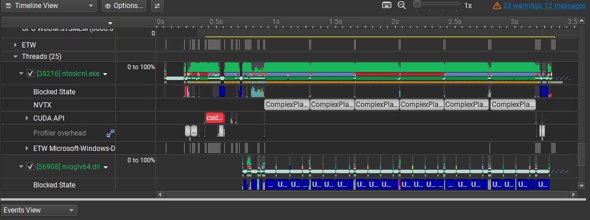
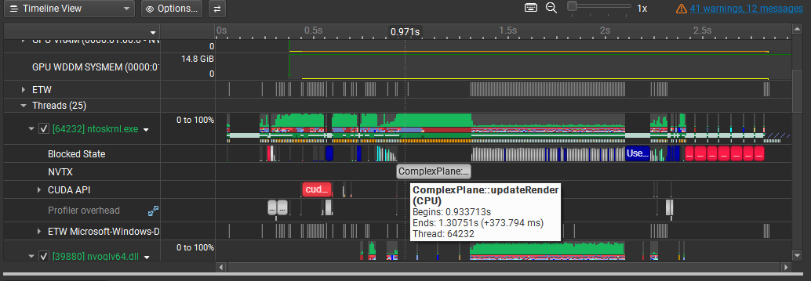
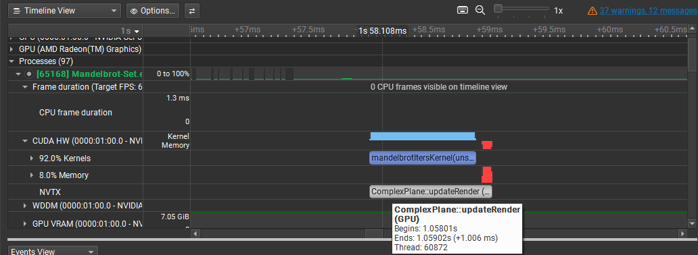
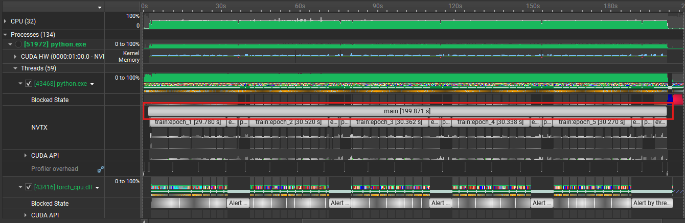
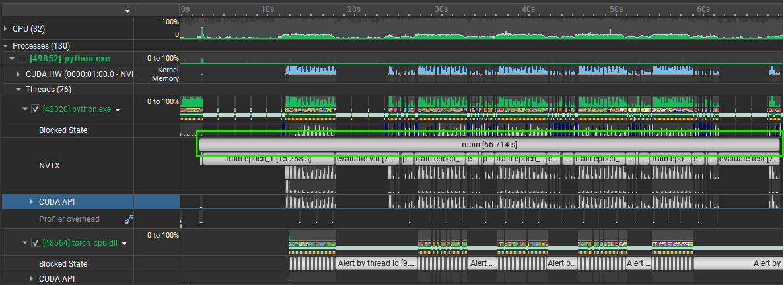

What I like working on
GPU acceleration, ML training and inference pipelines, systems-level optimization, multiplayer architecture, and software that benefits from careful measurement.
GPU Programming, Machine Learning, and Systems Portfolio
Computer Science Student | GPU Programming | Machine Learning | Performance Engineering
I build performance-oriented software and technical projects with a strong emphasis on CUDA, PyTorch, multiplayer systems, and profiling. My work is driven by implementation details, measurement, and practical results rather than vague optimization claims.
About
I am a Computer Science student who enjoys building performance-oriented software across GPU computing, machine learning systems, multiplayer game architecture, and systems-oriented development. I am especially interested in work that involves profiling, identifying bottlenecks, and improving throughput instead of stopping once something merely runs.
What I like working on
GPU acceleration, ML training and inference pipelines, systems-level optimization, multiplayer architecture, and software that benefits from careful measurement.
Engineering approach
I design and build systems around clear requirements, then profile bottlenecks, make targeted improvements, and validate the result with timing data, traces, or throughput measurements.
Core technical toolkit
C++, Python, C#, CUDA, PyTorch, Unity, NVIDIA Nsight Systems, NVTX, Docker, Git, and supporting ML/data tooling.
Projects
Selected projects focused on performance, systems design, and measurable engineering results.
Built a Mandelbrot renderer in C++ and CUDA that maps pixels independently across the GPU, enabling smooth real-time zooming and deeper fractal renders without the frame stalls of the original CPU path.
Instrumented the render loop with NVIDIA Nsight Systems and
NVTX markers to trace both CPU and GPU execution. Profiling
exposed a state-management bug where
ComplexPlane::updateRender() kept rerunning
because the app failed to transition from
CALCULATING to DISPLAYING,
causing unnecessary recomputation every frame.
After fixing the render-state transition and validating the CUDA path, full-frame time dropped from about 374 ms on CPU to about 1.0 ms on GPU, with the Mandelbrot kernel taking about 0.87 ms and the remaining ~0.13 ms spent in CPU-side post-processing and vertex/color updates. The project emphasizes parallel work distribution, profiling-led debugging, and measurable throughput gains backed by traces.

ComplexPlane::updateRender() caused by failing to transition from CALCULATING to DISPLAYING. The missing state update resulted in unnecessary recomputation each render loop iteration.

ComplexPlane::updateRender() executed on the CPU. The function takes about 374 ms for a single full-frame Mandelbrot computation.

ComplexPlane::updateRender() executed on the GPU. The total per-frame execution time is ~1.0 ms, with the Mandelbrot CUDA kernel accounting for ~0.87 ms. The remaining ~0.13 ms is spent in a single-threaded CPU loop responsible for post-processing and vertex/color updates, indicating potential for further optimization by reducing CPU-side work.
Built a Pokémon card image classification pipeline in Python using PyTorch, Torchvision, and CUDA, with asynchronous dataset collection through TCGdex and aiohttp plus automated train/validation/test organization.
Added label normalization to collapse noisy card names and card-specific variants into base Pokémon identities, which kept the supervised dataset more consistent and reduced label noise during training.
Profiled GPU execution and CPU-side input stalls with NVIDIA Nsight Systems and NVTX markers, then tuned the DataLoader pipeline instead of treating model code as the only bottleneck. The final 5-epoch run dropped from 199.871 s to 66.714 s, a 66.6% runtime reduction and roughly 3.0x speedup driven by better worker settings, persistent workers, pinned memory, non-blocking transfers, and `prefetch_factor=4`.


Built a top-down co-op zombie survival and extraction game
in Unity using Netcode for GameObjects, centered on
server-authoritative gameplay where clients send inputs via
ServerRpc and receive replicated state through
NetworkVariables and ClientRpc.
Extended the project beyond local multiplayer by wiring a dedicated server flow through PlayFab login and matchmaking, an Azure Function that hides public API keys and allocates servers, and a Dockerized PlayFab server build managed through GSDK lifecycle callbacks and NGO startup.
Focused heavily on simulation cost and network overhead. A
custom ZombieSyncManager applies a 3-tier LOD
strategy that reduces AI update frequency and disables
NetworkTransform for distant zombies, helping
the game scale to 300+ zombies while profiling at about
0.15 ms for 203 simultaneous zombies. Server testing on a
2 vCPU PlayFab VM ran at roughly 18% CPU and ~300 MB memory
with 300 zombies active.
ServerRpc, ClientRpc, and NetworkVariables drive authoritative gameplay sync
ZombieSyncManager LOD tiers reduce AI and network cost as zombie counts rise
Dockerized server builds integrate with the PlayFab GSDK lifecycle and cloud deployment flow
Skills
Primary stack
Systems / Performance
ML / Data
Multiplayer / Runtime
Supporting tools
Resume
View the resume page or open the PDF directly.
Contact
Review project code, profiling results, and implementation details on GitHub, or connect on LinkedIn for recruiting outreach and resume requests.